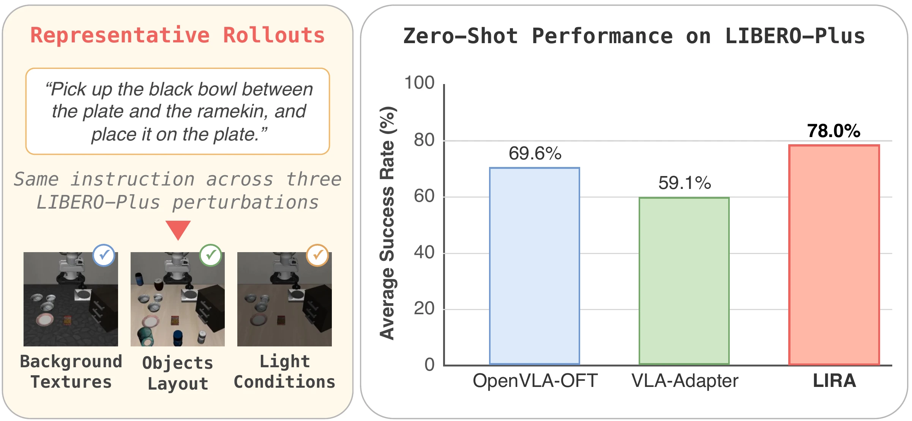
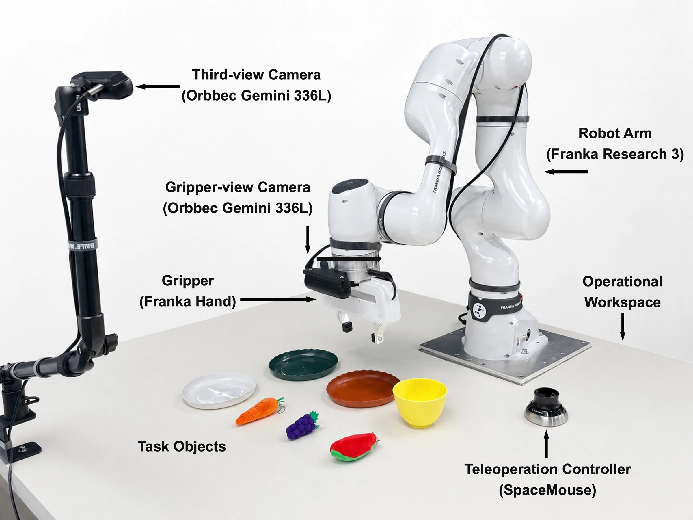

ROBOT LEARNING & MANIPULATION · 2026
LIRA
Local Cross-Layer Information Routing for Vision-Language-Action Decoding
- *Equal contribution
- †Project lead
- ‡Corresponding author

OVERVIEW
How should intermediate VLM features be routed into the action decoder?
Vision-language-action (VLA) models turn the representations of a pretrained vision-language model (VLM) into robot actions. The interface that passes intermediate VLM features to the action decoder is underexplored: existing designs expose only final-layer features, tie each decoder block to one matched VLM layer, or aggregate layers globally without keeping their local structure. LIRA treats this conditioning as depth-aware information routing. Each block of the action decoder receives query features from a small window of adjacent VLM layers centred on its own depth. The backbone architecture, the action decoder and the supervised training recipe stay unchanged.
-
01
A locality prior over VLM depth
The hypothesis is that adjacent VLM layers hold complementary task evidence for a decoder block at a given depth. Each block reads a centred local window rather than one matched layer or the full hierarchy.
-
02
No added trainable parameters
The routed features are concatenated along the token dimension and consumed by the existing cross-attention. Relative to VLA-Adapter, the baseline it builds on, LIRA adds no projection layers or trainable parameters.
-
03
Robustness under controlled shifts
In zero-shot transfer to LIBERO-Plus, overall success rises from 59.1% for VLA-Adapter to 78.0% under the same 0.5B configuration, an 18.9-point gain.
METHOD
A depth-aligned local window for every fusion block
At each control step the policy receives a third-person image, a gripper-view image, a language instruction and the robot's proprioceptive state. A Prismatic-style VLM with L layers processes the visual-language tokens together with M learnable LIRA Query tokens, and task-token features and LIRA Query features are taken from every layer. The action decoder is a stack of L Parallel Fusion Blocks (PFBs) initialised by Action Query tokens; an output head maps the final Action Query features to a continuous action chunk.
![Left: a Prismatic-style VLM drawn as L layers, each holding visual-language token features and LIRA Query features, with visual-language tokens and LIRA Query tokens as input. Middle: an action decoder of L stacked Parallel Fusion Blocks, fed by Action Query tokens and ending in the action. Arrows carry the LIRA Query features of layers i−1, i and i+1 into the block matched to layer i, and those of layers 1 and 2 into the first block. Right: inside one Parallel Fusion Block, Action Query features pass through self-attention and two cross-attention branches conditioned on visual-language features and LIRA Query features, one of them scaled, followed by a feed-forward network and add-and-norm.](assets/media/framework.webp)
-
Depth-aligned interface
As in VLA-Adapter, PFB i is matched to VLM layer i. In that one-to-one interface a block sees task-token and query features from its matched layer only, so nearby layers are out of its reach.
-
Local routing window
For PFB i, LIRA concatenates the LIRA Query features of the layers within r of layer i, in ascending layer order. The default r = 1 gives three layers for an interior block and two at the first and last layers.
-
Fusion in each block
Bridge Attention updates the Action Query features by self-attention and cross-attention. The matched task-token features act as a depth-aligned semantic anchor; the routed LIRA Query features, with the proprioceptive embedding, supply the local multi-depth context.
-
Same training objective
The model is trained by L1 regression on continuous action chunks. The controlled VLA-Adapter baseline uses the same objective and recipe, so the comparison isolates the routing.
RESULTS
Three simulation benchmarks and a physical robot
LIRA is compared with VLA-Adapter, its controlled architectural baseline, in the same compact configuration: a Prismatic-style VLM with a Qwen2.5-0.5B language backbone, two image observations, proprioceptive input, LoRA fine-tuning and supervised continuous-action regression, with 64 LIRA Query tokens and a three-layer window. Evaluation uses 500 trials per LIBERO suite, 1,000 task sequences on CALVIN ABC→D, and one rollout for each of the 10,030 LIBERO-Plus tasks under the official protocol. Other reported systems give benchmark context across model scales and training pipelines.
- LIBERO-Plus · zero-shot
- 78.0%
- Overall success over 10,030 perturbed tasks without LIBERO-Plus fine-tuning; 59.1% for VLA-Adapter. Table 4.
- LIBERO · average
- 98.9%
- Success rate over the four suites; 97.3% for VLA-Adapter. Table 2.
- CALVIN ABC→D
- 4.52
- Average completed sequence length out of five tasks; 4.42 for VLA-Adapter. Table 3.
- Added parameters
- None
- The routing adds no trainable parameters relative to VLA-Adapter.
LIBERO-Plus
LIBERO-Plus perturbs camera viewpoints, robot initialisation, language instructions, lighting, backgrounds, sensor noise and object layouts. Without LIBERO-Plus fine-tuning, LIRA raises the Overall score of VLA-Adapter by 18.9 percentage points and exceeds OpenVLA-OFT, the strongest compared zero-shot method, by 8.4 points; it has the highest success rate in six of the seven categories, Background being the exception. After fine-tuning on LIBERO-Plus it has the highest Overall score, 82.9%.
Table 4 of the paper: LIBERO-Plus success rates (%) under zero-shot transfer and target-domain fine-tuning. Params is the model scale in billions.
| Method | Params | Camera | Robot | Language | Light | Background | Noise | Layout | Overall |
|---|---|---|---|---|---|---|---|---|---|
| Zero-shot transfer | |||||||||
| OpenVLA | 7B | 0.8 | 3.5 | 23.0 | 8.1 | 34.8 | 15.2 | 28.5 | 15.6 |
| OpenVLA-OFT | 7B | 56.4 | 31.9 | 79.5 | 88.7 | 93.3 | 75.8 | 74.2 | 69.6 |
| UniVLA | 7B | 1.8 | 46.2 | 69.6 | 69.0 | 81.0 | 21.2 | 31.9 | 42.9 |
| π0 | 3B | 13.8 | 6.0 | 58.8 | 85.0 | 81.4 | 79.0 | 68.8 | 53.6 |
| π0-FAST | 3B | 65.1 | 21.6 | 61.0 | 73.2 | 73.2 | 74.4 | 68.8 | 61.6 |
| VLA-Adapter | 0.5B | 36.2 | 37.9 | 74.6 | 70.6 | 76.1 | 58.0 | 69.7 | 59.1 |
| LIRA | 0.5B | 74.9 | 51.8 | 82.0 | 96.9 | 90.2 | 80.5 | 78.1 | 78.0 |
| Fine-tuned on LIBERO-Plus | |||||||||
| OpenVLA-OFT | 7B | 92.8 | 30.3 | 85.8 | 94.9 | 93.9 | 89.3 | 77.6 | 79.5 |
| VLA-Adapter | 0.5B | 96.7 | 42.1 | 71.1 | 96.5 | 97.5 | 96.9 | 74.4 | 81.0 |
| LIRA | 0.5B | 93.5 | 51.5 | 83.0 | 95.8 | 91.4 | 92.6 | 77.7 | 82.9 |
Overall is computed over all 10,030 LIBERO-Plus tasks, not as the unweighted mean of the seven category rates. The paper marks in bold only the best Overall result within each setting.
LIBERO
LIRA improves on VLA-Adapter in all four suites. The average rises from 97.3% to 98.9%, with the largest gain on the multi-stage LIBERO-Long suite, from 95.0% to 97.6%.
Table 2 of the paper: success rates (%) on the four LIBERO suites. Systems with different training pipelines give benchmark context; VLA-Adapter is the controlled architectural baseline.
| Method | Params | Spatial | Object | Goal | Long | Avg. |
|---|---|---|---|---|---|---|
| UnifiedVLA | 8.5B | 95.4 | 98.8 | 93.6 | 94.0 | 95.5 |
| OpenVLA | 7B | 84.7 | 88.4 | 79.2 | 53.7 | 76.5 |
| UniVLA | 7B | 96.5 | 96.8 | 95.6 | 92.0 | 95.2 |
| OpenVLA-OFT | 7B | 97.6 | 98.4 | 97.9 | 94.5 | 97.1 |
| π0 | 3B | 96.8 | 98.8 | 95.8 | 85.2 | 94.2 |
| π0-FAST | 3B | 96.4 | 96.8 | 88.6 | 60.2 | 85.5 |
| AffordanceVLA (full) | 4B | 98.6 | 98.4 | 96.2 | 89.8 | 95.8 |
| VLA-Adapter | 0.5B | 97.8 | 99.2 | 97.2 | 95.0 | 97.3 |
| VLA-Adapter-Pro | 0.5B | 99.6 | 99.6 | 98.2 | 96.4 | 98.5 |
| LIRA | 0.5B | 99.6 | 99.8 | 98.5 | 97.6 | 98.9 |
CALVIN ABC→D
Policies train on environments A, B and C and are evaluated on chains of five tasks in environment D. The margin over VLA-Adapter grows with sequence depth: five-task success rises from 76.5% to 80.5%. LIRA has the highest success for two to five consecutive tasks and the highest average length; VLA-Adapter has the highest single-task success.
Table 3 of the paper: success rates (%) for completing one to five tasks consecutively on CALVIN ABC→D, and the average completed sequence length.
| Method | Params | 1 | 2 | 3 | 4 | 5 | Avg. len. ↑ |
|---|---|---|---|---|---|---|---|
| UnifiedVLA | 8.5B | 98.9 | 94.8 | 89.0 | 82.8 | 75.1 | 4.41 |
| OpenVLA | 7B | 91.3 | 77.8 | 62.0 | 52.1 | 43.5 | 3.27 |
| UniVLA | 7B | 95.5 | 85.8 | 75.4 | 66.9 | 56.5 | 3.80 |
| OpenVLA-OFT | 7B | 96.9 | 92.0 | 85.7 | 80.4 | 72.9 | 4.28 |
| AffordanceVLA (full) | 4B | 96.8 | 92.0 | 87.5 | 80.8 | 75.9 | 4.33 |
| VLA-Adapter | 0.5B | 99.1 | 94.6 | 88.8 | 82.8 | 76.5 | 4.42 |
| VLA-Adapter-Pro | 0.5B | 98.5 | 95.0 | 90.5 | 85.3 | 80.0 | 4.50 |
| LIRA | 0.5B | 98.8 | 95.3 | 91.0 | 85.8 | 80.5 | 4.52 |
Real robot
The physical platform is a 7-DoF Franka Research 3 arm with a Franka Hand gripper and two Orbbec Gemini 336L cameras for the third-person and gripper views; demonstrations are collected by SpaceMouse teleoperation. Four tasks are run, 10 trials each: Move (bring the gripper to the left or right of a target object), Pick-and-Place (put a specified object into a plate), Collection (place a plate on the instructed side, then an object into it) and Transfer (put two specified objects into the same plate, one after the other). LIRA has the highest final success on all four. The paper regards these results as preliminary, given 10 trials per task.
Table 9 of the paper: real-world successes out of 10 trials per task. For the two-stage tasks, Step 1 is the intermediate subgoal and Step 2 the full instruction.
| Method | Move | Pick-and-Place | Collection · Step 1 | Collection · Step 2 | Transfer · Step 1 | Transfer · Step 2 |
|---|---|---|---|---|---|---|
| OpenVLA-OFT | 8/10 | 6/10 | 8/10 | 5/10 | 6/10 | 4/10 |
| VLA-Adapter | 9/10 | 7/10 | 9/10 | 6/10 | 8/10 | 6/10 |
| LIRA | 10/10 | 9/10 | 10/10 | 8/10 | 8/10 | 7/10 |

Ablations, resources and scope
On LIBERO-Long, combining depth-aligned task-token features with locally routed LIRA Query features beats either source alone. More query tokens do not explain the gain: the best last-layer-only variant reaches 92.8% with 256 tokens, against 97.6% for LIRA with 64. The local window is ahead of the strongest alternative routing topology by 3.1 points on LIBERO-Long and 2.1 points on five-task CALVIN, and the three-layer window is the best width, with global aggregation the worst (Tables 5–7 of the paper).
![Three plots of success rate on LIBERO-Long for three conditioning sources: task-token features, LIRA Query features, and both together. Left, single-layer conditioning against VLM layers 1 to 24: task-token features peak at 88.3 at layer 13 and then fall, LIRA Query features reach 91.0 at layer 24, and both together reach 92.3 at layer 24. Middle, local cross-layer routing against the number of LIRA Query tokens from 1 to 512: the combined curve is the highest throughout and peaks at 97.6 with 64 tokens. Right, detail at 64 tokens: 90.5, 92.6 and 97.6.](assets/media/ablations.webp)
Against the reported configuration of OpenVLA-OFT, LIRA uses a 0.5B backbone instead of 7B, 12.8 GB of training memory instead of 62 GB (batch size 8) and reaches 186.3 Hz throughput against 71.4 Hz. The paper treats this as a system-level comparison, since the two systems differ in backbone and training protocol (Table 8).
The paper states the limits of its evidence: one compact VLM backbone, one PFB-based action decoder, the evaluated LIBERO and CALVIN protocols, and a single-robot study with 10 trials per task. It does not establish cross-embodiment robustness or performance on contact-rich and force-sensitive manipulation, and the LIBERO-Plus results do not imply unrestricted out-of-distribution generalisation. Code and model checkpoints are not public yet; the authors state that they will be released upon acceptance of the paper.
CITATION
@misc{zhang2026lira,
title={LIRA: Local Cross-Layer Information Routing for
Vision-Language-Action Decoding},
author={Zhewei Zhang and Puyue Wang and Guanren Qiao and Yijie Weng and
Jiawei Hu and Guo Li and Lujia Wang and Junyan Wang and Tao Gu and
Hongliang Lu and Guiliang Liu and Hong Jia and Xinhu Zheng},
year={2026},
eprint={2608.07596},
archivePrefix={arXiv},
primaryClass={cs.RO},
url={https://arxiv.org/abs/2608.07596},
}